3 Tumors
# ~~~~~~~~~~~~~~~~~~~~~~~~~~~~~~~~~~~ Thu Mar 4 14:23:11 2021
# ggplot theme setup
# ~~~~~~~~~~~~~~~~~~~~~~~~~~~~~~~~~~~ Thu Mar 4 14:23:17 2021
my_theme <- list(
ggplot2::theme(
axis.title.x = element_text(colour = "black", size = 16),
axis.text.x = element_text(size = 14),
axis.title.y = element_text(colour = "black", size = 16),
axis.text.y = element_text(size = 14),
legend.position = "top",
legend.title = element_blank(),
legend.text = element_text(size = 14)
)
)3.1 TN1
# ~~~~~~~~~~~~~~~~~~~~~~~~~~~~~~~~~~~ Tue Nov 24 17:13:42 2020
# Tumors Heatmaps/Consensus/Trees
# ~~~~~~~~~~~~~~~~~~~~~~~~~~~~~~~~~~~ Tue Nov 24 17:13:47 2020
TN1_ploidy <- 3.45
TN1_popseg <- readRDS(here("extdata/popseg/TN1_popseg.rds"))
TN1_popseg_long_ml <- readRDS(here("extdata/merge_levels/TN1_popseg_long_ml.rds"))
TN1_umap <- run_umap(TN1_popseg_long_ml)## Constructing UMAP embedding.## Loading required package: SingleCellExperiment## Building SNN graph.## Running hdbscan.## cluster n percent
## c1 32 0.02909091
## c10 24 0.02181818
## c11 45 0.04090909
## c12 19 0.01727273
## c13 79 0.07181818
## c14 23 0.02090909
## c15 51 0.04636364
## c16 23 0.02090909
## c17 149 0.13545455
## c2 56 0.05090909
## c3 134 0.12181818
## c4 66 0.06000000
## c5 40 0.03636364
## c6 39 0.03545455
## c7 74 0.06727273
## c8 228 0.20727273
## c9 18 0.01636364## Done.TN1_ordered <- order_dataset(popseg_long = TN1_popseg_long_ml,
clustering = TN1_clustering)
plot_umap(umap_df = TN1_umap,
clustering = TN1_clustering)## Joining, by = "cells"
TN1_consensus <- calculate_consensus(df = TN1_ordered$dataset_ordered,
clusters = TN1_ordered$clustering_ordered$subclones)
TN1_gen_classes <- consensus_genomic_classes(TN1_consensus,
ploidy_VAL = TN1_ploidy)
TN1_me_consensus_tree <- run_me_tree(consensus_df = TN1_consensus,
clusters = TN1_clustering,
ploidy_VAL = TN1_ploidy)## Warning: `data_frame()` is deprecated as of tibble 1.1.0.
## Please use `tibble()` instead.
## This warning is displayed once every 8 hours.
## Call `lifecycle::last_warnings()` to see where this warning was generated.## Warning: `mutate_()` is deprecated as of dplyr 0.7.0.
## Please use `mutate()` instead.
## See vignette('programming') for more help
## This warning is displayed once every 8 hours.
## Call `lifecycle::last_warnings()` to see where this warning was generated.TN1_annotation_genes <- c("SHC1",
"RUVBL1",
"PIK3CA",
"FGFR4",
"CDKN1A",
"EGFR",
"FGFR1",
"MYC",
"CDKN2A",
"GATA3",
"PTEN",
"CDK4",
"MDM2",
"BRCA2",
"RB1",
"TP53",
"BRCA1",
"CCNE1",
"AURKA",
"CCND1")plot_heatmap(df = TN1_ordered$dataset_ordered,
ploidy_VAL = TN1_ploidy,
ploidy_trunc = 2*(round(TN1_ploidy)),
clusters = TN1_ordered$clustering_ordered,
genomic_classes = TN1_gen_classes,
keep_gene = TN1_annotation_genes,
tree_order = TN1_me_consensus_tree$cs_tree_order,
show_legend = TRUE)## 'select()' returned 1:1 mapping between keys and columns## Warning: The input is a data frame, convert it to the matrix.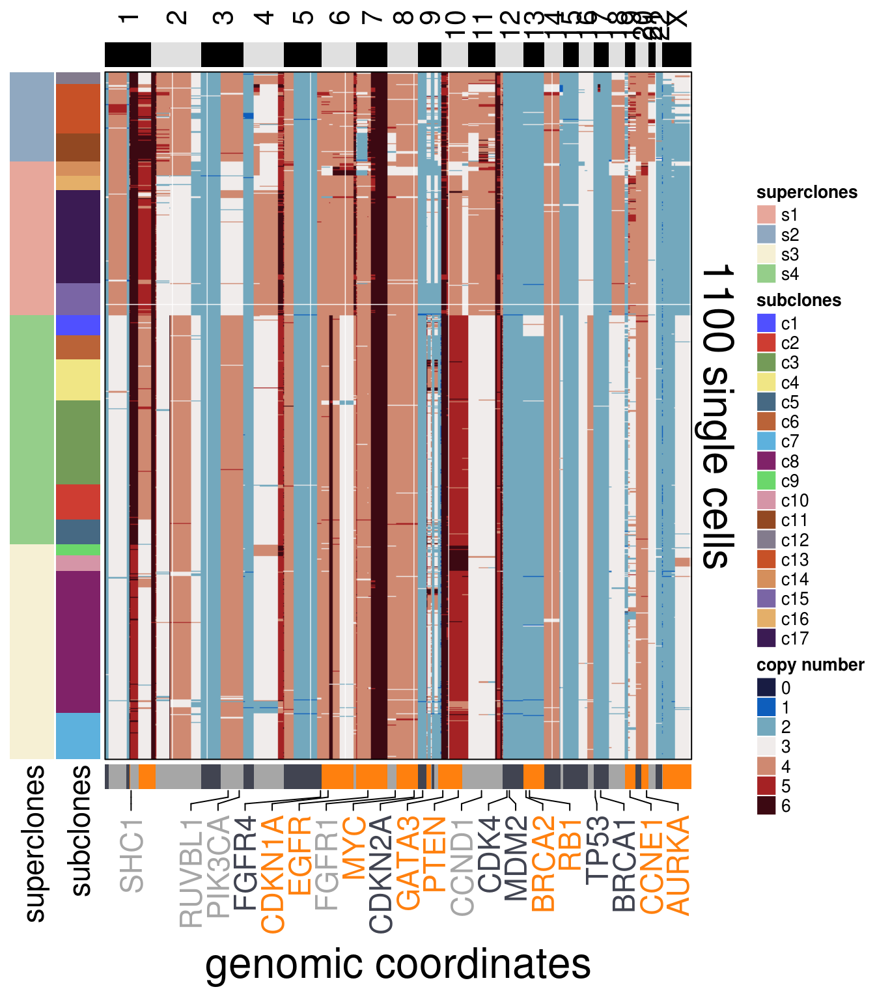
plot_consensus_heatmap(df = TN1_consensus,
clusters = TN1_ordered$clustering_ordered,
ploidy_VAL = TN1_ploidy,
ploidy_trunc = 2*(round(TN1_ploidy)),
keep_gene = TN1_annotation_genes,
tree_order = TN1_me_consensus_tree$cs_tree_order,
plot_title = NULL,
genomic_classes = TN1_gen_classes)## Warning: Setting row names on a tibble is deprecated.## 'select()' returned 1:1 mapping between keys and columns## Warning: The input is a data frame, convert it to the matrix.3.2 TN2
# ~~~~~~~~~~~~~~~~~~~~~~~~~~~~~~~~~~~ Tue Nov 24 17:13:42 2020
# Tumors Heatmaps/Consensus/Trees
# ~~~~~~~~~~~~~~~~~~~~~~~~~~~~~~~~~~~ Tue Nov 24 17:13:47 2020
TN2_ploidy <- 3.03
TN2_popseg <- readRDS(here("extdata/popseg/TN2_popseg.rds"))
TN2_popseg_long_ml <- readRDS(here("extdata/merge_levels/TN2_popseg_long_ml.rds"))
TN2_umap <- run_umap(TN2_popseg_long_ml)## Constructing UMAP embedding.## Building SNN graph.## Running hdbscan.## cluster n percent
## c1 23 0.02246094
## c10 147 0.14355469
## c11 31 0.03027344
## c12 140 0.13671875
## c13 43 0.04199219
## c14 34 0.03320312
## c15 156 0.15234375
## c2 22 0.02148438
## c3 55 0.05371094
## c4 51 0.04980469
## c5 44 0.04296875
## c6 44 0.04296875
## c7 28 0.02734375
## c8 170 0.16601562
## c9 36 0.03515625## Done.TN2_ordered <- order_dataset(popseg_long = TN2_popseg_long_ml,
clustering = TN2_clustering)
plot_umap(umap_df = TN2_umap,
clustering = TN2_clustering)## Joining, by = "cells"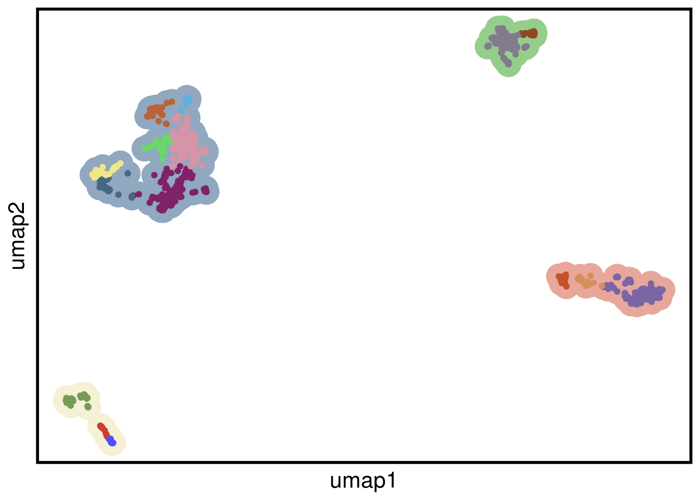
TN2_consensus <- calculate_consensus(df = TN2_ordered$dataset_ordered,
clusters = TN2_ordered$clustering_ordered$subclones)
TN2_gen_classes <- consensus_genomic_classes(TN2_consensus,
ploidy_VAL = TN2_ploidy)
TN2_me_consensus_tree <- run_me_tree(consensus_df = TN2_consensus,
clusters = TN2_clustering,
ploidy_VAL = TN2_ploidy)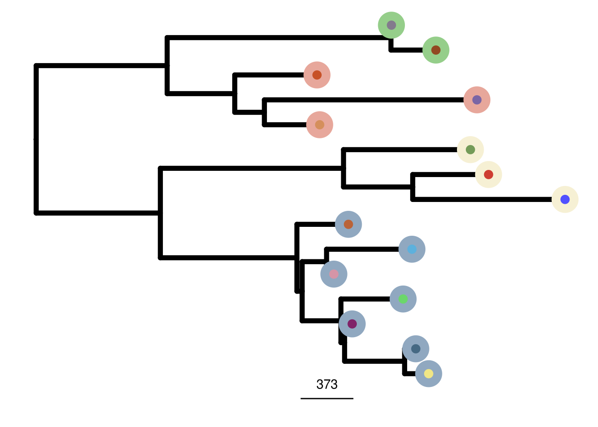
TN2_annotation_genes <- c(
"SHC1",
"PIK3CA",
"FGFR4",
"CDKN1A",
"EGFR",
"MTDH",
"MYC",
"GATA3",
"PTEN",
"CCND1",
"PGR",
"CDK4",
"MDM2",
"LRP1B",
"BRCA2",
"TP53",
"BRCA1",
"BCL2",
"CCNE1",
"AURKA"
)plot_heatmap(df = TN2_ordered$dataset_ordered,
ploidy_VAL = TN2_ploidy,
ploidy_trunc = 2*(round(TN2_ploidy)),
clusters = TN2_ordered$clustering_ordered,
genomic_classes = TN2_gen_classes,
keep_gene = TN2_annotation_genes,
tree_order = TN2_me_consensus_tree$cs_tree_order,
show_legend = TRUE)## 'select()' returned 1:1 mapping between keys and columns## Warning: The input is a data frame, convert it to the matrix.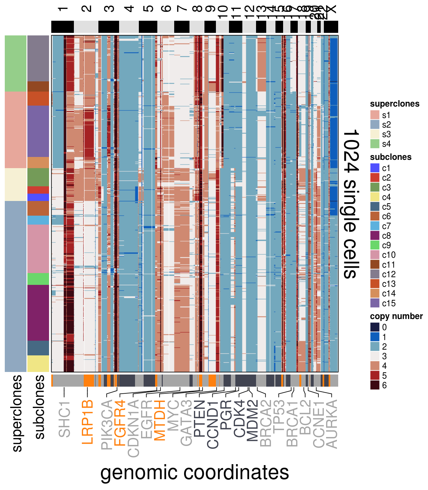
plot_consensus_heatmap(df = TN2_consensus,
clusters = TN2_ordered$clustering_ordered,
ploidy_VAL = TN2_ploidy,
ploidy_trunc = 2*(round(TN2_ploidy)),
keep_gene = TN2_annotation_genes,
tree_order = TN2_me_consensus_tree$cs_tree_order,
plot_title = NULL,
genomic_classes = TN2_gen_classes)## Warning: Setting row names on a tibble is deprecated.## 'select()' returned 1:1 mapping between keys and columns## Warning: The input is a data frame, convert it to the matrix.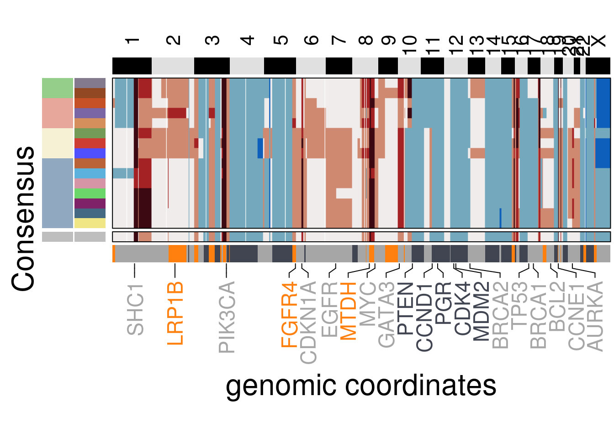
3.3 TN3
# ~~~~~~~~~~~~~~~~~~~~~~~~~~~~~~~~~~~ Tue Nov 24 17:13:42 2020
# Tumors Heatmaps/Consensus/Trees
# ~~~~~~~~~~~~~~~~~~~~~~~~~~~~~~~~~~~ Tue Nov 24 17:13:47 2020
TN3_ploidy <- 3.44
TN3_popseg <- readRDS(here("extdata/popseg/TN3_popseg.rds"))
TN3_popseg_long_ml <- readRDS(here("extdata/merge_levels/TN3_popseg_long_ml.rds"))
TN3_umap <- run_umap(TN3_popseg_long_ml)## Constructing UMAP embedding.## Building SNN graph.## Running hdbscan.## cluster n percent
## c1 67 0.06085377
## c2 71 0.06448683
## c3 63 0.05722071
## c4 450 0.40871935
## c5 33 0.02997275
## c6 32 0.02906449
## c7 77 0.06993642
## c8 106 0.09627611
## c9 202 0.18346957## Done.TN3_ordered <- order_dataset(popseg_long = TN3_popseg_long_ml,
clustering = TN3_clustering)
plot_umap(umap_df = TN3_umap,
clustering = TN3_clustering)## Joining, by = "cells"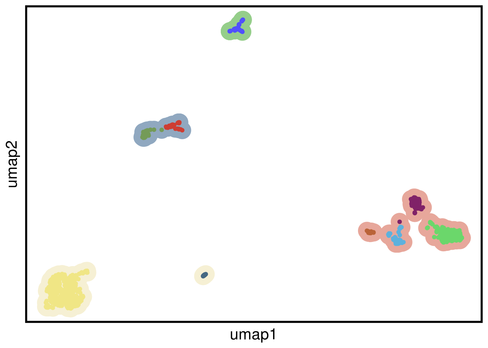
TN3_consensus <- calculate_consensus(df = TN3_ordered$dataset_ordered,
clusters = TN3_ordered$clustering_ordered$subclones)
TN3_gen_classes <- consensus_genomic_classes(TN3_consensus,
ploidy_VAL = TN3_ploidy)
TN3_me_consensus_tree <- run_me_tree(consensus_df = TN3_consensus,
clusters = TN3_clustering,
ploidy_VAL = TN3_ploidy)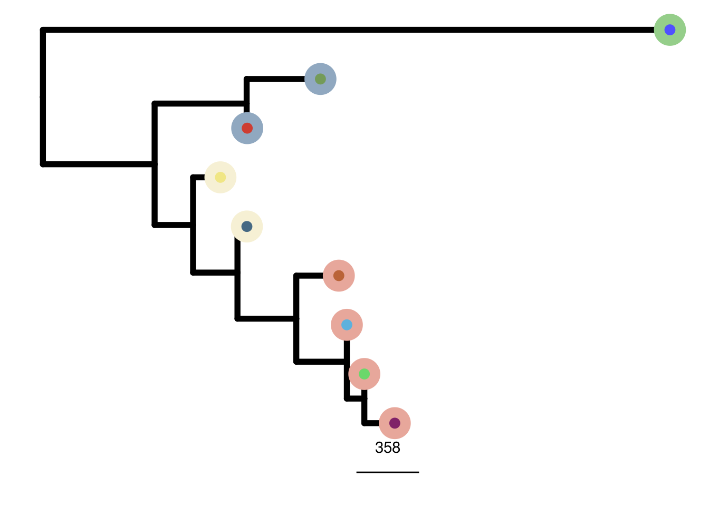
TN3_annotation_genes <-
c(
"CDKN2C",
"SHC1",
"PIK3CA",
"FGFR4",
"EGFR",
"FGFR1",
"MYC",
"CDKN2A",
"GATA3",
"PTEN",
"CCND1",
"CDK4",
"MDM2",
"RB1",
"TP53",
"BRCA1",
"BCL2",
"CCNE1",
"AURKA",
"LRP1B"
)plot_heatmap(df = TN3_ordered$dataset_ordered,
ploidy_VAL = TN3_ploidy,
ploidy_trunc = 2*(round(TN3_ploidy)),
clusters = TN3_ordered$clustering_ordered,
genomic_classes = TN3_gen_classes,
keep_gene = TN3_annotation_genes,
tree_order = TN3_me_consensus_tree$cs_tree_order,
show_legend = TRUE)## 'select()' returned 1:1 mapping between keys and columns## Warning: The input is a data frame, convert it to the matrix.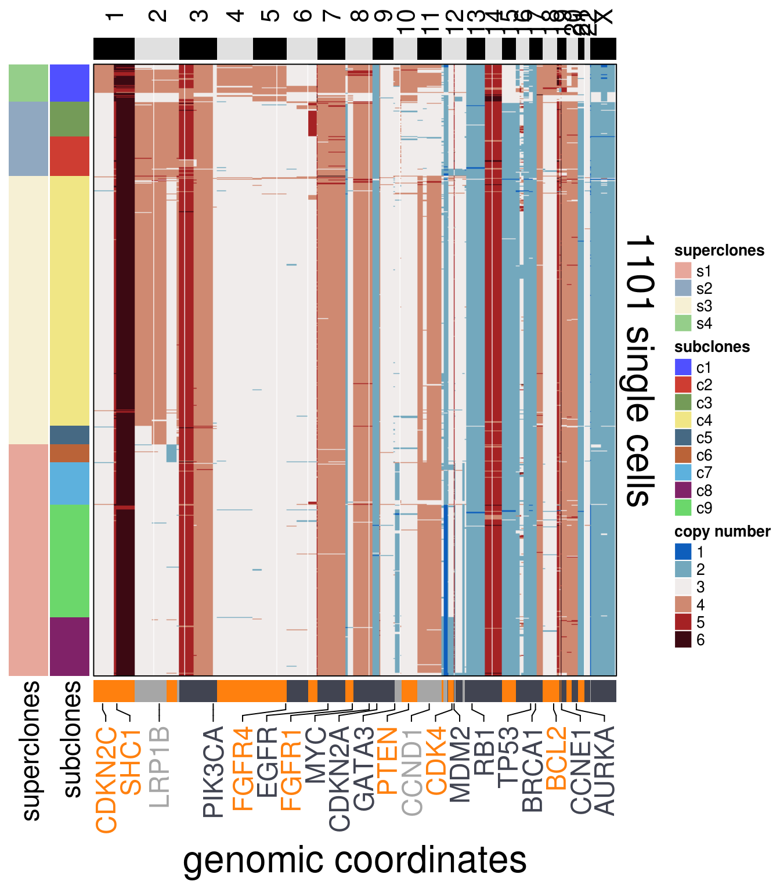
plot_consensus_heatmap(df = TN3_consensus,
clusters = TN3_ordered$clustering_ordered,
ploidy_VAL = TN3_ploidy,
ploidy_trunc = 2*(round(TN3_ploidy)),
keep_gene = TN3_annotation_genes,
tree_order = TN3_me_consensus_tree$cs_tree_order,
plot_title = NULL,
genomic_classes = TN3_gen_classes)## Warning: Setting row names on a tibble is deprecated.## 'select()' returned 1:1 mapping between keys and columns## Warning: The input is a data frame, convert it to the matrix.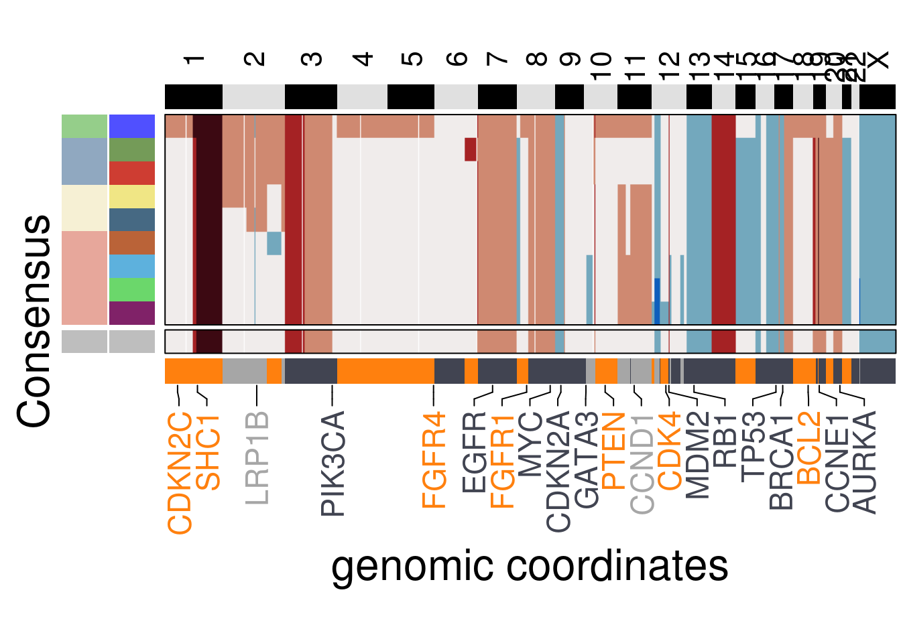
3.4 TN4
# ~~~~~~~~~~~~~~~~~~~~~~~~~~~~~~~~~~~ Tue Nov 24 17:13:42 2020
# Tumors Heatmaps/Consensus/Trees
# ~~~~~~~~~~~~~~~~~~~~~~~~~~~~~~~~~~~ Tue Nov 24 17:13:47 2020
TN4_ploidy <- 3.81
TN4_popseg <- readRDS(here("extdata/popseg/TN4_popseg.rds"))
TN4_popseg_long_ml <- readRDS(here("extdata/merge_levels/TN4_popseg_long_ml.rds"))
TN4_umap <- run_umap(TN4_popseg_long_ml)## Constructing UMAP embedding.## Building SNN graph.## Running hdbscan.## cluster n percent
## c1 255 0.19510329
## c10 29 0.02218822
## c11 42 0.03213466
## c12 46 0.03519510
## c13 32 0.02448355
## c14 45 0.03442999
## c15 220 0.16832441
## c16 29 0.02218822
## c17 70 0.05355777
## c18 37 0.02830910
## c19 27 0.02065800
## c2 31 0.02371844
## c20 36 0.02754399
## c21 66 0.05049732
## c22 26 0.01989288
## c3 31 0.02371844
## c4 56 0.04284621
## c5 29 0.02218822
## c6 66 0.05049732
## c7 54 0.04131599
## c8 48 0.03672533
## c9 32 0.02448355## Done.TN4_ordered <- order_dataset(popseg_long = TN4_popseg_long_ml,
clustering = TN4_clustering)
plot_umap(umap_df = TN4_umap,
clustering = TN4_clustering)## Joining, by = "cells"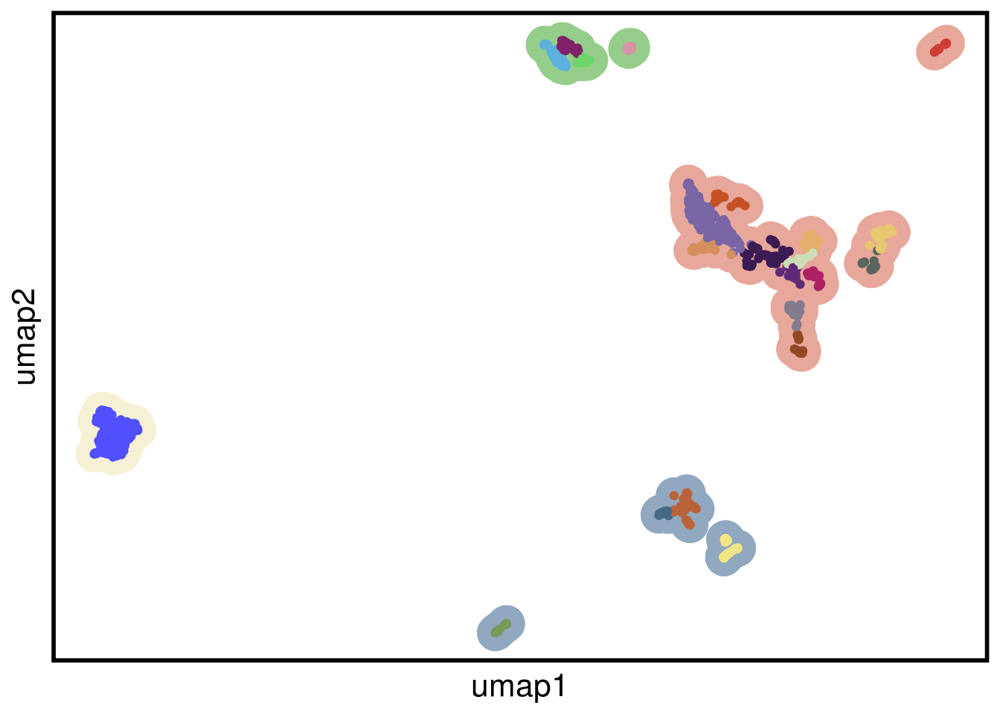
TN4_consensus <- calculate_consensus(df = TN4_ordered$dataset_ordered,
clusters = TN4_ordered$clustering_ordered$subclones)
TN4_gen_classes <- consensus_genomic_classes(TN4_consensus,
ploidy_VAL = TN4_ploidy)
TN4_me_consensus_tree <- run_me_tree(consensus_df = TN4_consensus,
clusters = TN4_clustering,
ploidy_VAL = TN4_ploidy)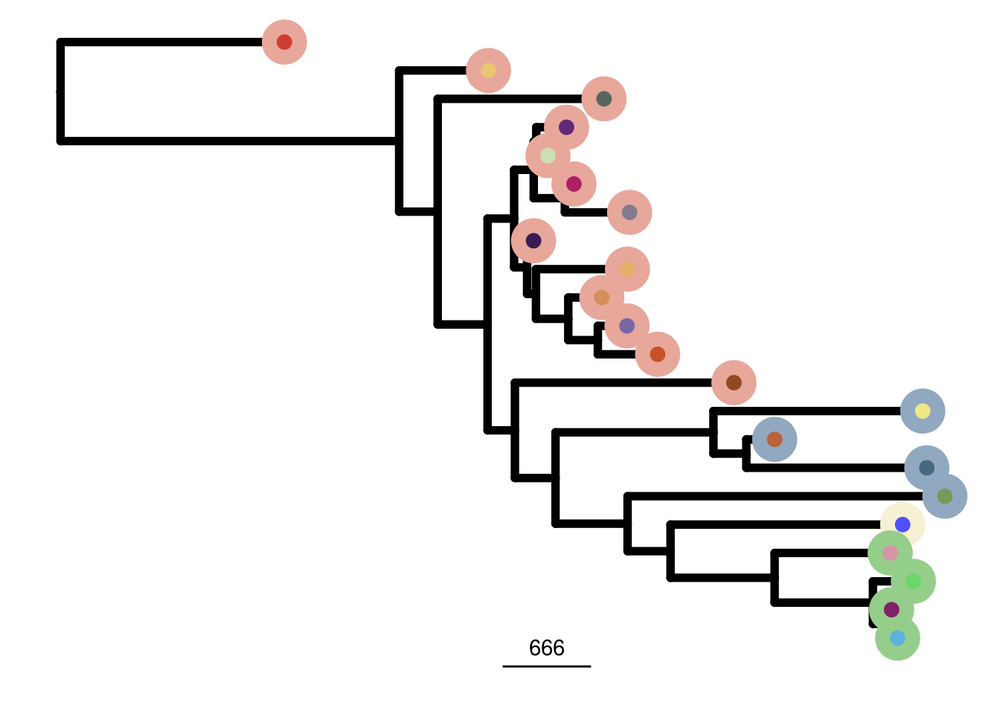
TN4_annotation_genes <-
c(
"CDKN2C",
"SHC1",
"PIK3CA",
"CDKN1A",
"ESR1",
"EGFR",
"MYC",
"CDKN2A",
"GATA3",
"PTEN",
"MDM2",
"BRCA2",
"RB1",
"TP53",
"BRCA1",
"BCL2",
"CCNE1",
"NCOA3",
"AURKA",
"IGF1R",
"NCOA1"
)plot_heatmap(df = TN4_ordered$dataset_ordered,
ploidy_VAL = TN4_ploidy,
ploidy_trunc = 2*(round(TN4_ploidy)),
clusters = TN4_ordered$clustering_ordered,
genomic_classes = TN4_gen_classes,
keep_gene = TN4_annotation_genes,
tree_order = TN4_me_consensus_tree$cs_tree_order,
show_legend = TRUE)## 'select()' returned 1:1 mapping between keys and columns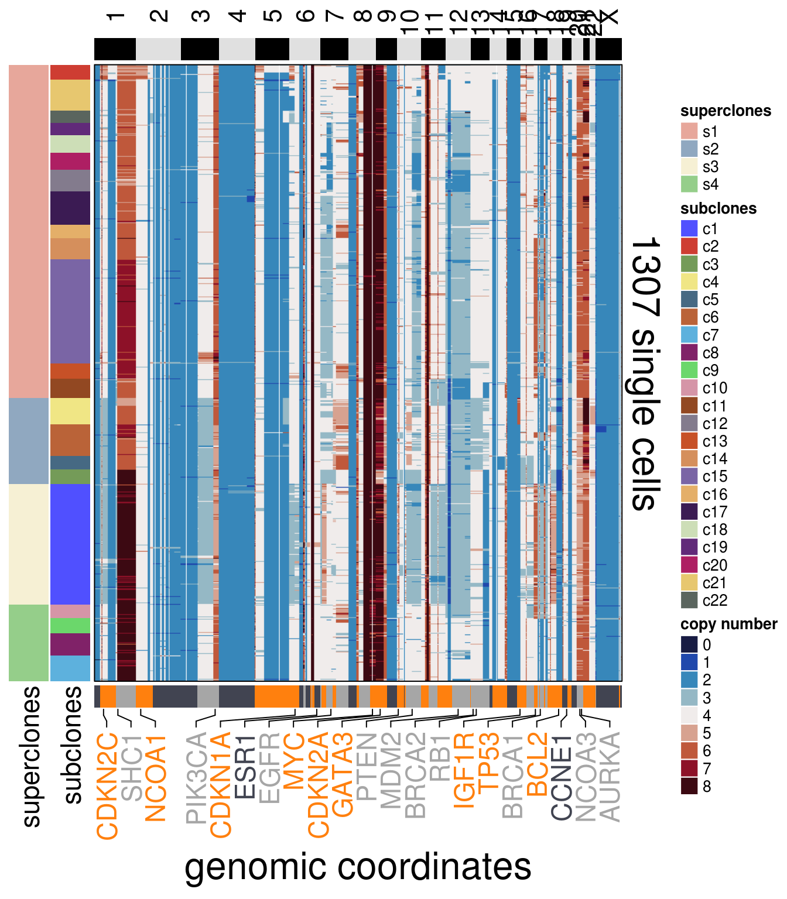
plot_consensus_heatmap(df = TN4_consensus,
clusters = TN4_ordered$clustering_ordered,
ploidy_VAL = TN4_ploidy,
ploidy_trunc = 2*(round(TN4_ploidy)),
keep_gene = TN4_annotation_genes,
tree_order = TN4_me_consensus_tree$cs_tree_order,
plot_title = NULL,
genomic_classes = TN4_gen_classes)## 'select()' returned 1:1 mapping between keys and columns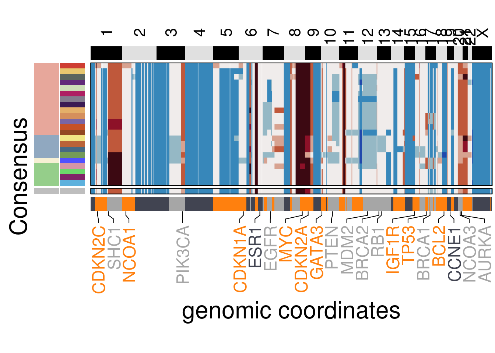
3.5 TN5
# ~~~~~~~~~~~~~~~~~~~~~~~~~~~~~~~~~~~ Tue Nov 24 17:13:42 2020
# Tumors Heatmaps/Consensus/Trees
# ~~~~~~~~~~~~~~~~~~~~~~~~~~~~~~~~~~~ Tue Nov 24 17:13:47 2020
TN5_ploidy <- 2.65
TN5_popseg <- readRDS(here("extdata/popseg/TN5_popseg.rds"))
TN5_popseg_long_ml <- readRDS(here("extdata/merge_levels/TN5_popseg_long_ml.rds"))
TN5_umap <- run_umap(TN5_popseg_long_ml)## Constructing UMAP embedding.## Building SNN graph.## Running hdbscan.## cluster n percent
## c1 52 0.04200323
## c2 53 0.04281099
## c3 573 0.46284330
## c4 27 0.02180937
## c5 389 0.31421648
## c6 26 0.02100162
## c7 118 0.09531502## Done.TN5_ordered <- order_dataset(popseg_long = TN5_popseg_long_ml,
clustering = TN5_clustering)
plot_umap(umap_df = TN5_umap,
clustering = TN5_clustering)## Joining, by = "cells"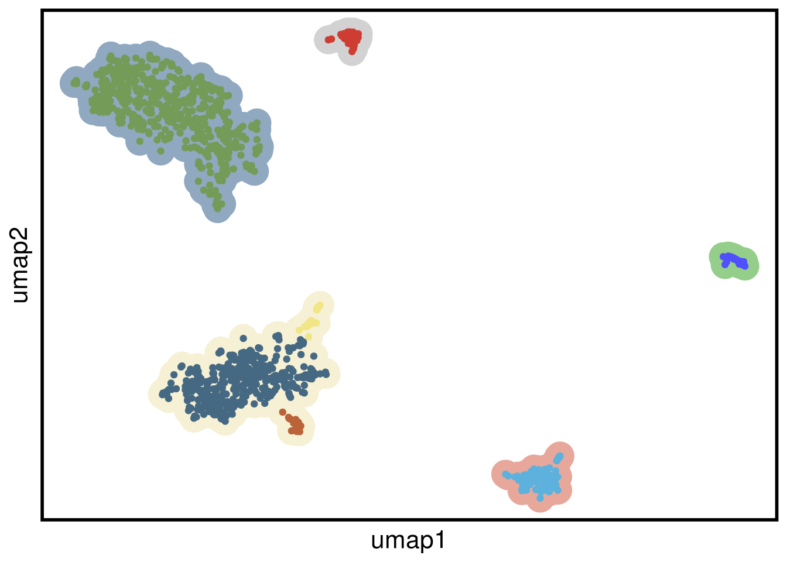
TN5_consensus <- calculate_consensus(df = TN5_ordered$dataset_ordered,
clusters = TN5_ordered$clustering_ordered$subclones)
TN5_gen_classes <- consensus_genomic_classes(TN5_consensus,
ploidy_VAL = TN5_ploidy)
TN5_me_consensus_tree <- run_me_tree(consensus_df = TN5_consensus,
clusters = TN5_clustering,
ploidy_VAL = TN5_ploidy,
rotate_nodes = c(8,10,11))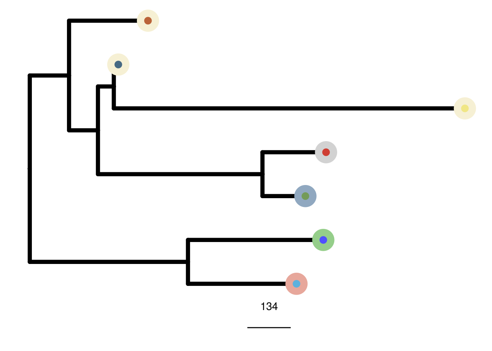
TN5_annotation_genes <-
c(
"CDKN2C",
"GADD45A",
"SHC1",
"PIK3CA",
"FGFR4",
"EGFR",
"FGFR1",
"MYC",
"CDKN2A",
"GATA3",
"PTEN",
"CCND1",
"MDM2",
"BRCA2",
"RB1",
"TP53",
"BRCA1",
"PPM1D",
"CCNE1",
"ERBB2",
"ESR1"
)plot_heatmap(df = TN5_ordered$dataset_ordered,
ploidy_VAL = TN5_ploidy,
ploidy_trunc = 2*(round(TN5_ploidy)),
clusters = TN5_ordered$clustering_ordered,
genomic_classes = TN5_gen_classes,
keep_gene = TN5_annotation_genes,
tree_order = TN5_me_consensus_tree$cs_tree_order,
show_legend = TRUE)## 'select()' returned 1:1 mapping between keys and columns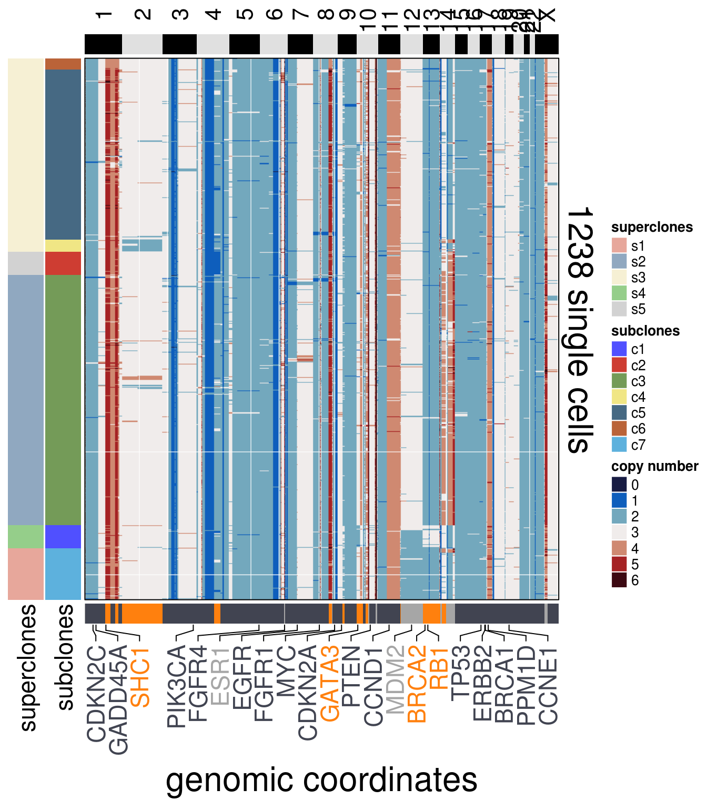
plot_consensus_heatmap(df = TN5_consensus,
clusters = TN5_ordered$clustering_ordered,
ploidy_VAL = TN5_ploidy,
ploidy_trunc = 2*(round(TN5_ploidy)),
keep_gene = TN5_annotation_genes,
tree_order = TN5_me_consensus_tree$cs_tree_order,
plot_title = NULL,
genomic_classes = TN5_gen_classes)## 'select()' returned 1:1 mapping between keys and columns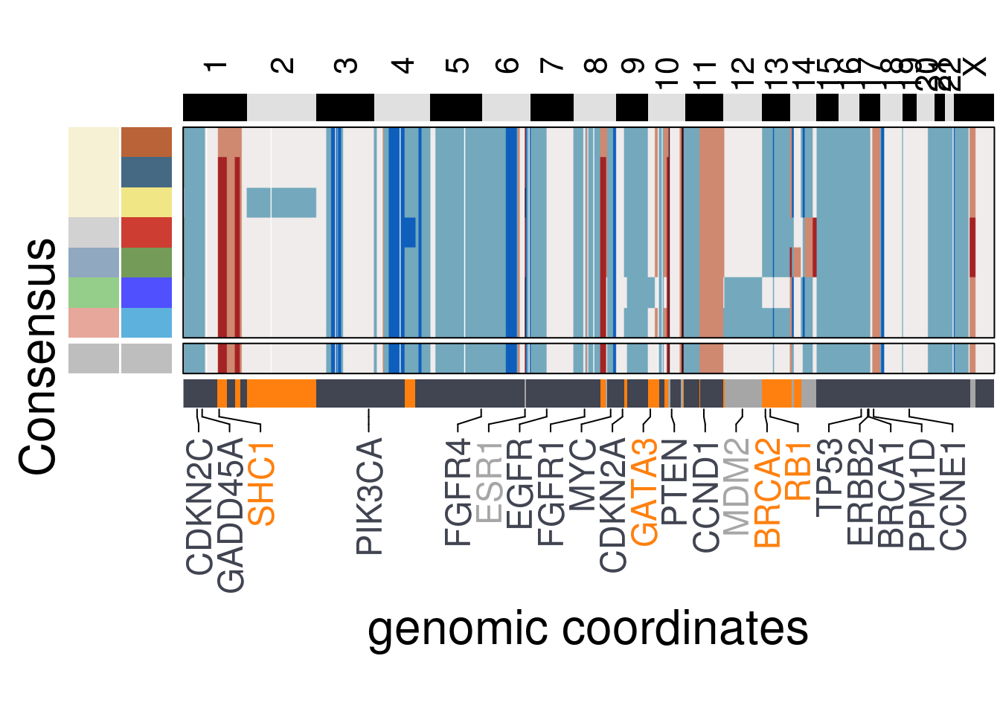
3.6 TN6
# ~~~~~~~~~~~~~~~~~~~~~~~~~~~~~~~~~~~ Tue Nov 24 17:13:42 2020
# Tumors Heatmaps/Consensus/Trees
# ~~~~~~~~~~~~~~~~~~~~~~~~~~~~~~~~~~~ Tue Nov 24 17:13:47 2020
TN6_ploidy <- 3.17
TN6_popseg <- readRDS(here("extdata/popseg/TN6_popseg.rds"))
TN6_popseg_long_ml <- readRDS(here("extdata/merge_levels/TN6_popseg_long_ml.rds"))
TN6_umap <- run_umap(TN6_popseg_long_ml)## Constructing UMAP embedding.## Building SNN graph.## Running hdbscan.## cluster n percent
## c1 31 0.02249637
## c10 211 0.15312046
## c11 31 0.02249637
## c12 82 0.05950653
## c13 111 0.08055152
## c14 37 0.02685051
## c15 37 0.02685051
## c16 197 0.14296081
## c2 25 0.01814224
## c3 37 0.02685051
## c4 33 0.02394775
## c5 42 0.03047896
## c6 51 0.03701016
## c7 393 0.28519594
## c8 18 0.01306241
## c9 42 0.03047896## Done.TN6_ordered <- order_dataset(popseg_long = TN6_popseg_long_ml,
clustering = TN6_clustering)
plot_umap(umap_df = TN6_umap,
clustering = TN6_clustering)## Joining, by = "cells"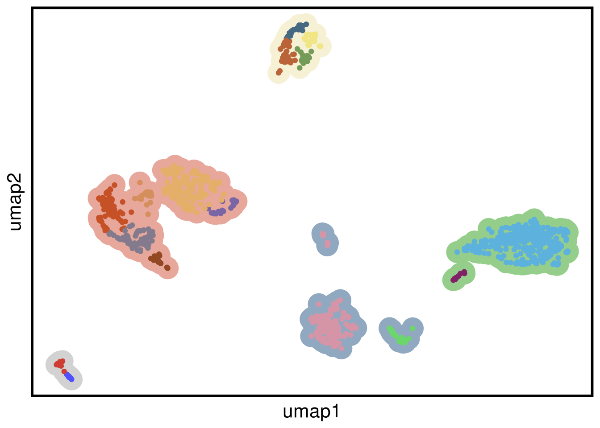
TN6_consensus <- calculate_consensus(df = TN6_ordered$dataset_ordered,
clusters = TN6_ordered$clustering_ordered$subclones)
TN6_gen_classes <- consensus_genomic_classes(TN6_consensus,
ploidy_VAL = TN6_ploidy)
TN6_me_consensus_tree <- run_me_tree(consensus_df = TN6_consensus,
clusters = TN6_clustering,
ploidy_VAL = TN6_ploidy,
rotate_nodes = c(17:20, 22, 29))
TN6_annotation_genes <-
c(
"CDKN2C",
"SHC1",
"RUVBL1",
"PIK3CA",
"CDKN1A",
"EGFR",
"FGFR1",
"CDKN2A",
"GATA3",
"PTEN",
"CDK4",
"MDM2",
"BRCA2",
"RB1",
"TP53",
"BRCA1",
"BCL2",
"NCOA3",
"AURKA",
"GATA3",
"PGR"
)plot_heatmap(df = TN6_ordered$dataset_ordered,
ploidy_VAL = TN6_ploidy,
ploidy_trunc = 2*(round(TN6_ploidy)),
clusters = TN6_ordered$clustering_ordered,
genomic_classes = TN6_gen_classes,
keep_gene = TN6_annotation_genes,
tree_order = TN6_me_consensus_tree$cs_tree_order,
show_legend = TRUE)## 'select()' returned 1:1 mapping between keys and columns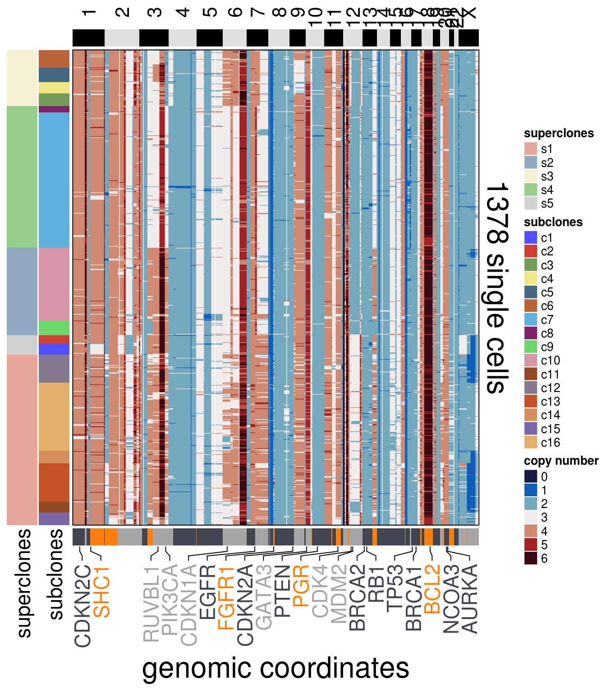
plot_consensus_heatmap(df = TN6_consensus,
clusters = TN6_ordered$clustering_ordered,
ploidy_VAL = TN6_ploidy,
ploidy_trunc = 2*(round(TN6_ploidy)),
keep_gene = TN6_annotation_genes,
tree_order = TN6_me_consensus_tree$cs_tree_order,
plot_title = NULL,
genomic_classes = TN6_gen_classes)## 'select()' returned 1:1 mapping between keys and columns
3.7 TN7
# ~~~~~~~~~~~~~~~~~~~~~~~~~~~~~~~~~~~ Tue Nov 24 17:13:42 2020
# Tumors Heatmaps/Consensus/Trees
# ~~~~~~~~~~~~~~~~~~~~~~~~~~~~~~~~~~~ Tue Nov 24 17:13:47 2020
TN7_ploidy <- 3.15
TN7_popseg <- readRDS(here("extdata/popseg/TN7_popseg.rds"))
TN7_popseg_long_ml <- readRDS(here("extdata/merge_levels/TN7_popseg_long_ml.rds"))
TN7_umap <- run_umap(TN7_popseg_long_ml)## Constructing UMAP embedding.## Building SNN graph.## Running hdbscan.## cluster n percent
## c1 17 0.01220388
## c10 59 0.04235463
## c11 110 0.07896626
## c12 63 0.04522613
## c13 152 0.10911701
## c14 365 0.26202441
## c15 30 0.02153625
## c16 37 0.02656138
## c17 40 0.02871500
## c18 53 0.03804738
## c2 114 0.08183776
## c3 51 0.03661163
## c4 45 0.03230438
## c5 40 0.02871500
## c6 55 0.03948313
## c7 56 0.04020101
## c8 80 0.05743001
## c9 26 0.01866475## Done.TN7_ordered <- order_dataset(popseg_long = TN7_popseg_long_ml,
clustering = TN7_clustering)
plot_umap(umap_df = TN7_umap,
clustering = TN7_clustering)## Joining, by = "cells"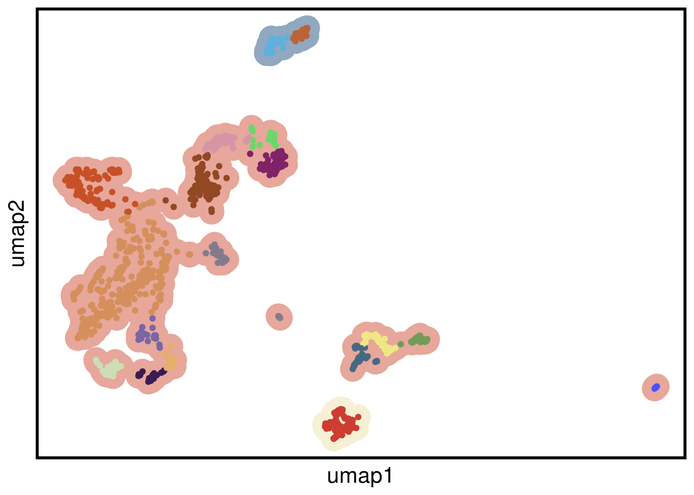
TN7_consensus <- calculate_consensus(df = TN7_ordered$dataset_ordered,
clusters = TN7_ordered$clustering_ordered$subclones)
TN7_gen_classes <- consensus_genomic_classes(TN7_consensus,
ploidy_VAL = TN7_ploidy)
TN7_me_consensus_tree <- run_me_tree(consensus_df = TN7_consensus,
clusters = TN7_clustering,
ploidy_VAL = TN7_ploidy,
rotate_nodes = c(26, 27))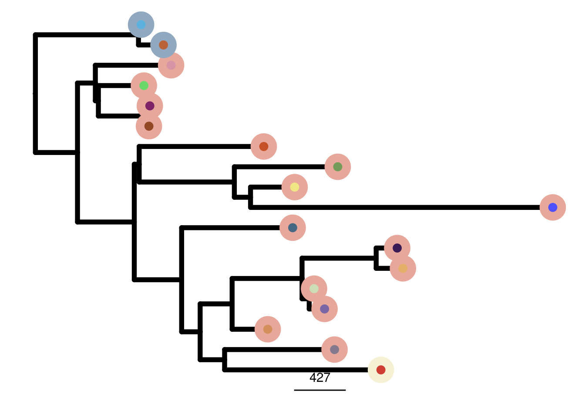
TN7_annotation_genes <-
c(
"CDKN2C",
"SHC1",
"RUVBL1",
"PIK3CA",
"CDKN1A",
"EGFR",
"FGFR1",
"CDKN2A",
"GATA3",
"PTEN",
"CDK4",
"MDM2",
"BRCA2",
"RB1",
"TP53",
"BRCA1",
"BCL2",
"NCOA3",
"AURKA",
"GATA3",
"PGR"
)plot_heatmap(df = TN7_ordered$dataset_ordered,
ploidy_VAL = TN7_ploidy,
ploidy_trunc = 2*(round(TN7_ploidy)),
clusters = TN7_ordered$clustering_ordered,
genomic_classes = TN7_gen_classes,
keep_gene = TN7_annotation_genes,
tree_order = TN7_me_consensus_tree$cs_tree_order,
show_legend = TRUE)## 'select()' returned 1:1 mapping between keys and columns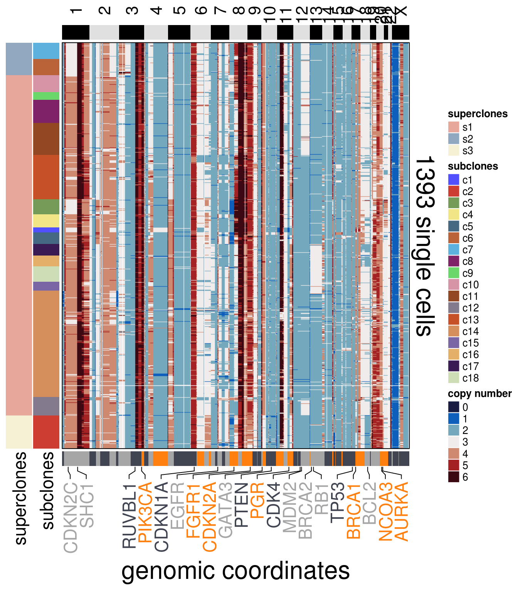
plot_consensus_heatmap(df = TN7_consensus,
clusters = TN7_ordered$clustering_ordered,
ploidy_VAL = TN7_ploidy,
ploidy_trunc = 2*(round(TN7_ploidy)),
keep_gene = TN7_annotation_genes,
tree_order = TN7_me_consensus_tree$cs_tree_order,
plot_title = NULL,
genomic_classes = TN7_gen_classes)## 'select()' returned 1:1 mapping between keys and columns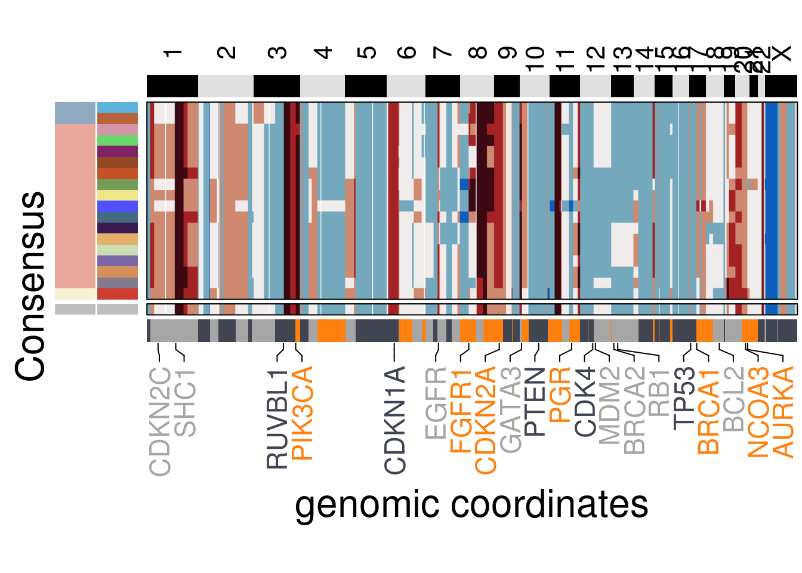
3.8 TN8
# ~~~~~~~~~~~~~~~~~~~~~~~~~~~~~~~~~~~ Tue Nov 24 17:13:42 2020
# Tumors Heatmaps/Consensus/Trees
# ~~~~~~~~~~~~~~~~~~~~~~~~~~~~~~~~~~~ Tue Nov 24 17:13:47 2020
TN8_ploidy <- 3.95
TN8_popseg <- readRDS(here("extdata/popseg/TN8_popseg.rds"))
TN8_popseg_long_ml <- readRDS(here("extdata/merge_levels/TN8_popseg_long_ml.rds"))
TN8_umap <- run_umap(TN8_popseg_long_ml)## Constructing UMAP embedding.## Building SNN graph.## Running hdbscan.## cluster n percent
## c1 38 0.03104575
## c10 29 0.02369281
## c11 52 0.04248366
## c12 45 0.03676471
## c13 43 0.03513072
## c14 44 0.03594771
## c15 263 0.21486928
## c2 54 0.04411765
## c3 96 0.07843137
## c4 55 0.04493464
## c5 88 0.07189542
## c6 22 0.01797386
## c7 35 0.02859477
## c8 325 0.26552288
## c9 35 0.02859477## Done.TN8_ordered <- order_dataset(popseg_long = TN8_popseg_long_ml,
clustering = TN8_clustering)
plot_umap(umap_df = TN8_umap,
clustering = TN8_clustering)## Joining, by = "cells"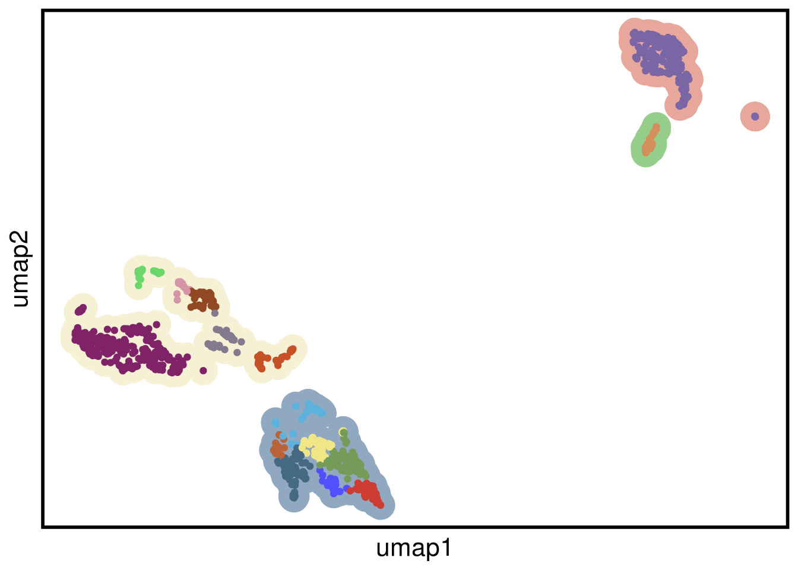
TN8_consensus <- calculate_consensus(df = TN8_ordered$dataset_ordered,
clusters = TN8_ordered$clustering_ordered$subclones)
TN8_gen_classes <- consensus_genomic_classes(TN8_consensus,
ploidy_VAL = TN8_ploidy)
TN8_me_consensus_tree <- run_me_tree(consensus_df = TN8_consensus,
clusters = TN8_clustering,
ploidy_VAL = TN8_ploidy,
rotate_nodes = c(17,18, 25, 29))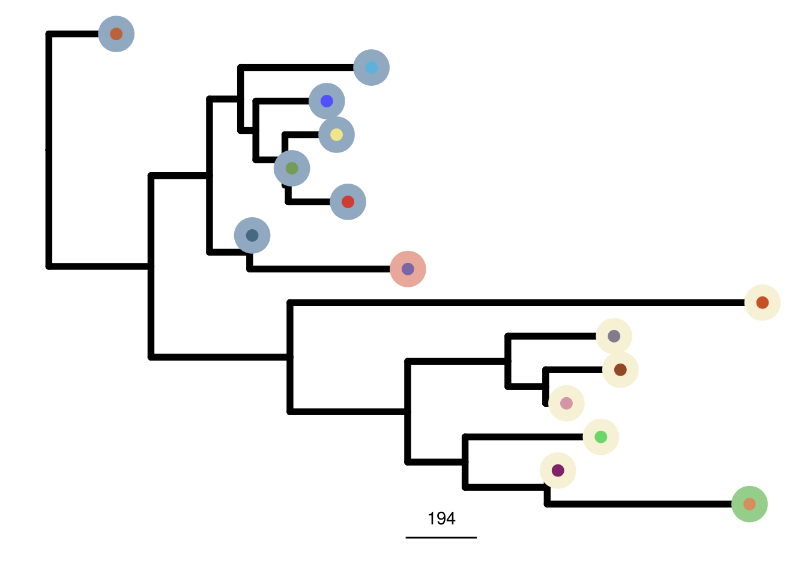
TN8_annotation_genes <-
c(
"CDKN2C",
"SHC1",
"ESR1",
"MTDH",
"MYC",
"GATA3",
"PTEN",
"PGR",
"MDM2",
"BRCA2",
"RB1",
"BCL2",
"NCOA3",
"AURKA",
"CHEK2"
)plot_heatmap(df = TN8_ordered$dataset_ordered,
ploidy_VAL = TN8_ploidy,
ploidy_trunc = 2*(round(TN8_ploidy)),
clusters = TN8_ordered$clustering_ordered,
genomic_classes = TN8_gen_classes,
keep_gene = TN8_annotation_genes,
tree_order = TN8_me_consensus_tree$cs_tree_order,
show_legend = TRUE)## 'select()' returned 1:1 mapping between keys and columns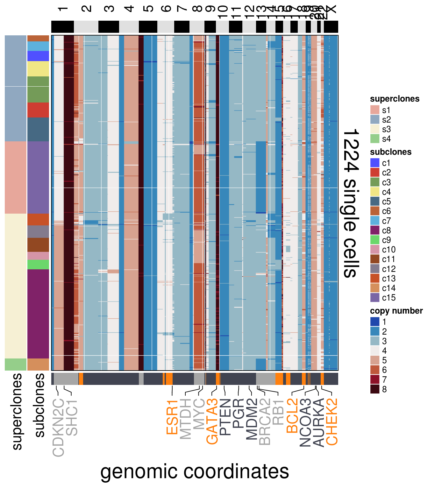
plot_consensus_heatmap(df = TN8_consensus,
clusters = TN8_ordered$clustering_ordered,
ploidy_VAL = TN8_ploidy,
ploidy_trunc = 2*(round(TN8_ploidy)),
keep_gene = TN8_annotation_genes,
tree_order = TN8_me_consensus_tree$cs_tree_order,
plot_title = NULL,
genomic_classes = TN8_gen_classes)## 'select()' returned 1:1 mapping between keys and columns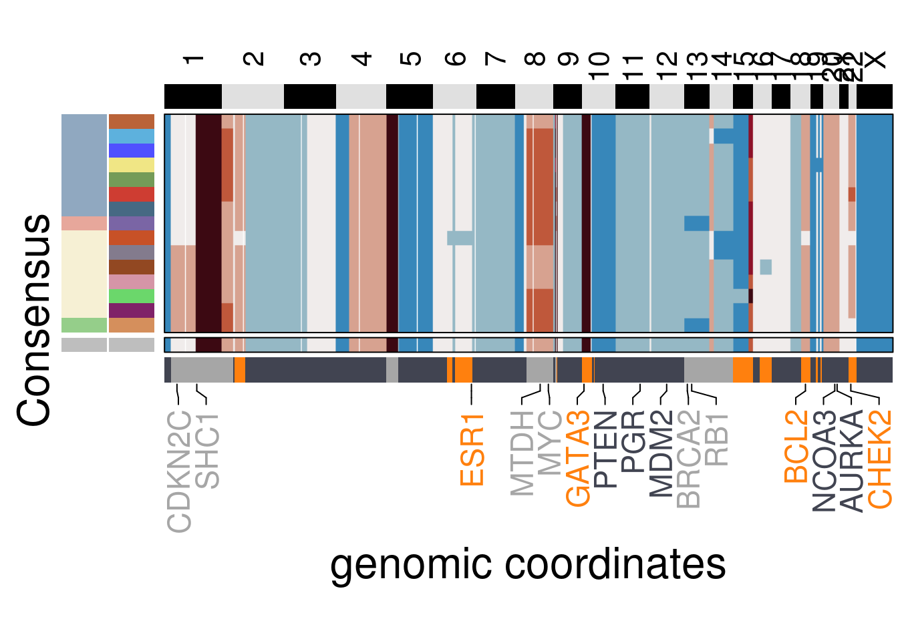
3.9 Clones barplot
n_clones_tumors <- tibble(
sample = rep(c(
"TN1",
"TN2",
"TN3",
"TN4",
"TN5",
"TN6",
"TN7",
"TN8"
),2),
n_clones = c(
length(unique(TN1_clustering$superclones)),
length(unique(TN2_clustering$superclones)),
length(unique(TN3_clustering$superclones)),
length(unique(TN4_clustering$superclones)),
length(unique(TN5_clustering$superclones)),
length(unique(TN6_clustering$superclones)),
length(unique(TN7_clustering$superclones)),
length(unique(TN8_clustering$superclones)),
length(unique(TN1_clustering$subclones)),
length(unique(TN2_clustering$subclones)),
length(unique(TN3_clustering$subclones)),
length(unique(TN4_clustering$subclones)),
length(unique(TN5_clustering$subclones)),
length(unique(TN6_clustering$subclones)),
length(unique(TN7_clustering$subclones)),
length(unique(TN8_clustering$subclones))
),
group = c(
rep("superclones",8),
rep("subclones", 8)
)
)
p_clones_tumors <- n_clones_tumors %>%
ggplot() +
geom_col(
aes(
x = sample,
y = n_clones,
fill = fct_relevel(group, c("superclones",
"subclones"))
),
position = "dodge"
) +
theme_classic() +
my_theme +
theme(axis.text.x = element_text(angle = 90, vjust = .5)) +
scale_y_continuous(
breaks = scales::pretty_breaks(n = 10),
limits = c(0, 22),
expand = c(0, 0)
) +
paletteer::scale_fill_paletteer_d("yarrr::info") +
xlab("") +
ylab("number of clones")
p_clones_tumors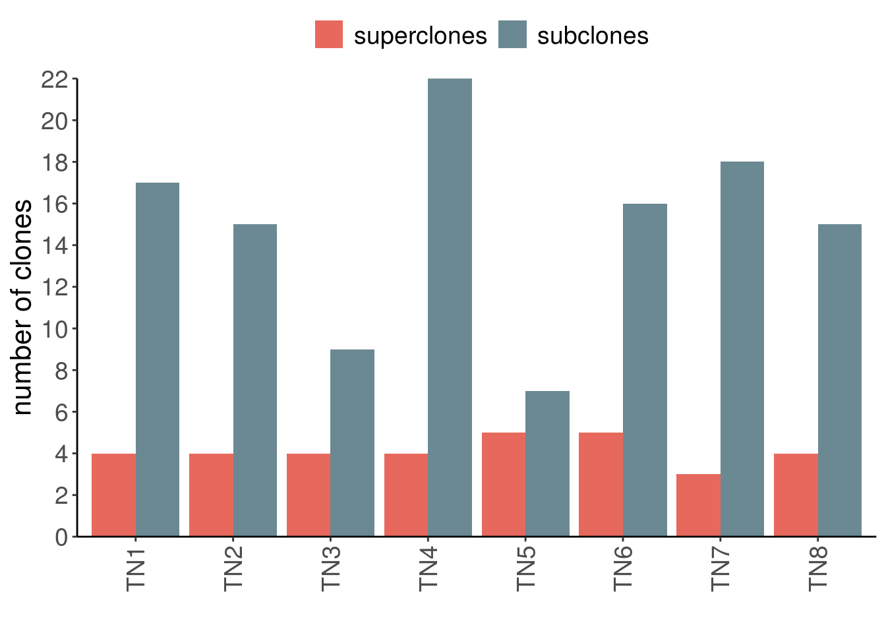
3.10 Shannon diversity
shan <- function(data, indices) {
data_ind <- data[indices]
prop <- janitor::tabyl(data_ind) %>% pull(percent)
div <- -sum(prop*log(prop))
return(div)
}
TN1_proportions <- janitor::tabyl(TN1_clustering$subclones) %>% pull(percent)
TN2_proportions <- janitor::tabyl(TN2_clustering$subclones) %>% pull(percent)
TN3_proportions <- janitor::tabyl(TN3_clustering$subclones) %>% pull(percent)
TN4_proportions <- janitor::tabyl(TN4_clustering$subclones) %>% pull(percent)
TN5_proportions <- janitor::tabyl(TN5_clustering$subclones) %>% pull(percent)
TN6_proportions <- janitor::tabyl(TN6_clustering$subclones) %>% pull(percent)
TN7_proportions <- janitor::tabyl(TN7_clustering$subclones) %>% pull(percent)
TN8_proportions <- janitor::tabyl(TN8_clustering$subclones) %>% pull(percent)
TN1_diver <- -sum(TN1_proportions*log(TN1_proportions))
TN2_diver <- -sum(TN2_proportions*log(TN2_proportions))
TN3_diver <- -sum(TN3_proportions*log(TN3_proportions))
TN4_diver <- -sum(TN4_proportions*log(TN4_proportions))
TN5_diver <- -sum(TN5_proportions*log(TN5_proportions))
TN6_diver <- -sum(TN6_proportions*log(TN6_proportions))
TN7_diver <- -sum(TN7_proportions*log(TN7_proportions))
TN8_diver <- -sum(TN8_proportions*log(TN8_proportions))
boot_TN1 <- boot::boot(TN1_clustering$subclones, statistic = shan, R = 3000)
boot_TN1_ci <- boot::boot.ci(boot_TN1)
boot_TN2 <- boot::boot(TN2_clustering$subclones, statistic = shan, R = 3000)
boot_TN2_ci <- boot::boot.ci(boot_TN2)
boot_TN3 <- boot::boot(TN3_clustering$subclones, statistic = shan, R = 3000)
boot_TN3_ci <- boot::boot.ci(boot_TN3)
boot_TN4 <- boot::boot(TN4_clustering$subclones, statistic = shan, R = 3000)
boot_TN4_ci <- boot::boot.ci(boot_TN4)
boot_TN5 <- boot::boot(TN5_clustering$subclones, statistic = shan, R = 3000)
boot_TN5_ci <- boot::boot.ci(boot_TN5)
boot_TN6 <- boot::boot(TN6_clustering$subclones, statistic = shan, R = 3000)
boot_TN6_ci <- boot::boot.ci(boot_TN6)
boot_TN7 <- boot::boot(TN7_clustering$subclones, statistic = shan, R = 3000)
boot_TN7_ci <- boot::boot.ci(boot_TN7)
boot_TN8 <- boot::boot(TN8_clustering$subclones, statistic = shan, R = 3000)
boot_TN8_ci <- boot::boot.ci(boot_TN8)
div_table <- tibble(
sample = c("TN1",
"TN2",
"TN3",
"TN4",
"TN5",
"TN6",
"TN7",
"TN8"),
shannon_index = c(
TN1_diver,
TN2_diver,
TN3_diver,
TN4_diver,
TN5_diver,
TN6_diver,
TN7_diver,
TN8_diver
),
lci = c(
boot_TN1_ci$normal[2],
boot_TN2_ci$normal[2],
boot_TN3_ci$normal[2],
boot_TN4_ci$normal[2],
boot_TN5_ci$normal[2],
boot_TN6_ci$normal[2],
boot_TN7_ci$normal[2],
boot_TN8_ci$normal[2]
),
uci = c(
boot_TN1_ci$normal[3],
boot_TN2_ci$normal[3],
boot_TN3_ci$normal[3],
boot_TN4_ci$normal[3],
boot_TN5_ci$normal[3],
boot_TN6_ci$normal[3],
boot_TN7_ci$normal[3],
boot_TN8_ci$normal[3]
)
)
# error bar = 95% confidence interval
p_tumors_diver <- div_table %>%
ggplot() +
geom_errorbar(aes(
x = fct_reorder(sample, shannon_index),
ymin = lci,
ymax = uci
),
width = .1,
size = 2) +
geom_point(aes(
x = fct_reorder(sample, shannon_index),
y = shannon_index,
color = sample
), size = 4) +
theme_classic() +
my_theme +
theme(legend.position = "none",
axis.text.x = element_text(
angle = 90,
vjust = 0.5,
hjust = 1
)) +
scale_y_continuous(breaks = scales::pretty_breaks(n = 12)) +
scale_color_manual(values = c(rcartocolor::carto_pal(8, "Safe"))) +
ylab("shannon diversity index") +
xlab("")
p_tumors_diver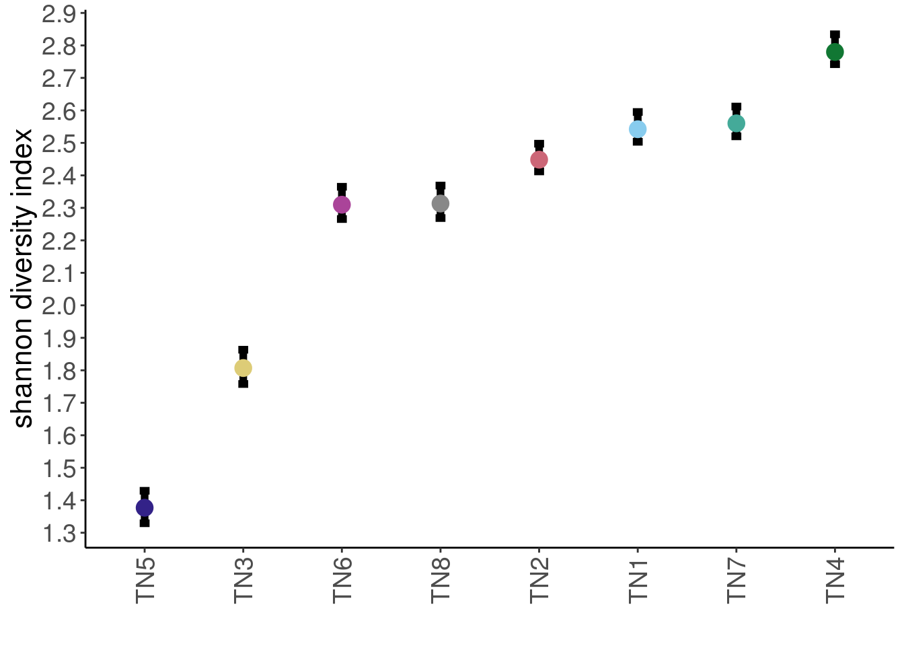
3.11 Gains/Losses plot
TN1_alt_perc <-
gain_loss_percentage(consensus = TN1_consensus,
ploidy_VAL = TN1_ploidy,
sample = "TN1")
TN2_alt_perc <-
gain_loss_percentage(consensus = TN2_consensus,
ploidy = TN2_ploidy,
sample = "TN2")
TN3_alt_perc <-
gain_loss_percentage(consensus = TN3_consensus,
ploidy = TN3_ploidy,
sample = "TN3")
TN4_alt_perc <-
gain_loss_percentage(consensus = TN4_consensus,
ploidy = TN4_ploidy,
sample = "TN4")
TN5_alt_perc <-
gain_loss_percentage(consensus = TN5_consensus,
ploidy = TN5_ploidy,
sample = "TN5")
TN6_alt_perc <-
gain_loss_percentage(consensus = TN6_consensus,
ploidy = TN6_ploidy,
sample = "TN6")
TN7_alt_perc <-
gain_loss_percentage(consensus = TN7_consensus,
ploidy = TN7_ploidy,
sample = "TN7")
TN8_alt_perc <-
gain_loss_percentage(consensus = TN8_consensus,
ploidy = TN8_ploidy,
sample = "TN8")
all_tumors_gainloss_percentage <-
bind_rows(TN2_alt_perc,
TN3_alt_perc,
TN4_alt_perc,
TN1_alt_perc,
TN5_alt_perc,
TN6_alt_perc,
TN7_alt_perc,
TN8_alt_perc
) %>%
dplyr::rename(percent = n)
p_gain_loss <- ggplot() +
geom_col(data = all_tumors_gainloss_percentage,
aes(x = fct_relevel(clone, rev(unique(gtools::mixedsort(all_tumors_gainloss_percentage$clone)))),
y = percent,
fill = class
),
color = "black") +
facet_wrap(vars(sample), ncol = 4, scales = "free_y") +
scale_fill_manual(values = c("ground_state" = "white",
"gain" = "firebrick3",
"loss" = "steelblue"),
label = c("loss",
"neutral",
"gain"),
breaks = c("loss",
"ground_state",
"gain")) +
theme_cowplot() +
theme(strip.background = element_rect(fill = "white"),
legend.title = element_blank(),
legend.position = "top",
axis.text = element_text(size = 10)) +
coord_flip() +
xlab("")
# ggtitle("Percentage of gain_loss per subclone")
p_gain_loss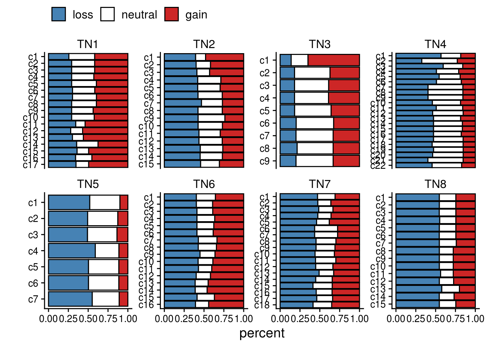
3.12 Genomic classes plots
3.12.1 Counts
TN1_seg_length <- calc_genclass_length(TN1_gen_classes,
popseg = TN1_popseg,
popseg_long = TN1_popseg_long_ml) %>%
mutate(sample = "TN1")
TN2_seg_length <- calc_genclass_length(TN2_gen_classes,
popseg = TN2_popseg,
popseg_long = TN2_popseg_long_ml) %>%
mutate(sample = "TN2")
TN3_seg_length <- calc_genclass_length(TN3_gen_classes,
popseg = TN3_popseg,
popseg_long = TN3_popseg_long_ml) %>%
mutate(sample = "TN3")
TN4_seg_length <- calc_genclass_length(TN4_gen_classes,
popseg = TN4_popseg,
popseg_long = TN4_popseg_long_ml) %>%
mutate(sample = "TN4")
TN5_seg_length <- calc_genclass_length(TN5_gen_classes,
popseg = TN5_popseg,
popseg_long = TN5_popseg_long_ml) %>%
mutate(sample = "TN5")
TN6_seg_length <- calc_genclass_length(TN6_gen_classes,
popseg = TN6_popseg,
popseg_long = TN6_popseg_long_ml) %>%
mutate(sample = "TN6")
TN7_seg_length <- calc_genclass_length(TN7_gen_classes,
popseg = TN7_popseg,
popseg_long = TN7_popseg_long_ml) %>%
mutate(sample = "TN7")
TN8_seg_length <- calc_genclass_length(TN8_gen_classes,
popseg = TN8_popseg,
popseg_long = TN8_popseg_long_ml) %>%
mutate(sample = "TN8")
df_cna <- bind_rows(TN1_seg_length,
TN2_seg_length,
TN3_seg_length,
TN4_seg_length,
TN5_seg_length,
TN6_seg_length,
TN7_seg_length,
TN8_seg_length)p_count_cna <- df_cna %>%
dplyr::group_by(sample) %>%
dplyr::distinct(seg_index, .keep_all = TRUE) %>%
dplyr::count(class) %>%
dplyr::mutate(class = fct_relevel(class,
c("uCNA",
"sCNA",
"cCNA"))) %>%
ggplot() +
geom_bar(
aes(x = sample,
y = n,
fill = class),
position = "stack",
stat = "identity",
width = .6
) +
scale_fill_manual(
values = c(
"cCNA" = "#414451",
"sCNA" = "#A5ACAF",
"uCNA" = "#FF800E"
),
breaks = c("cCNA",
"sCNA",
"uCNA"),
labels = c("cCNA",
"sCNA",
"uCNA")
) +
scale_y_continuous(breaks = scales::pretty_breaks(n = 15),
expand = c(0, 0)) +
theme_classic() +
my_theme +
theme(legend.position = 'top',
axis.text.x = element_text(angle = 90,
vjust = .5,
hjust = 1),
axis.text = element_text(color = 'black')) +
xlab("") +
ylab("CNA class count")
p_count_cna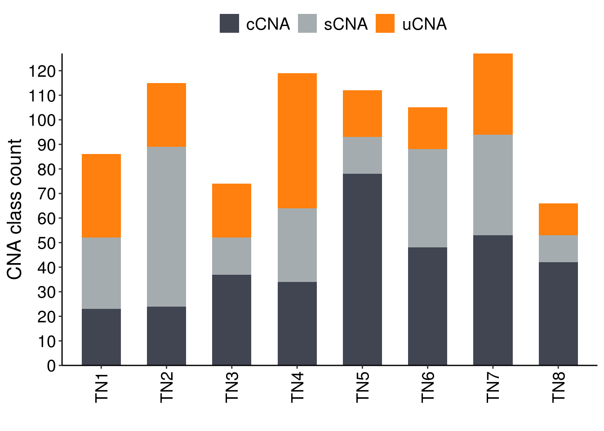
3.12.2 Segment length
p_seg_box <- df_cna %>%
dplyr::group_by(sample) %>%
dplyr::distinct(seg_index, .keep_all = TRUE) %>%
dplyr::mutate(class = fct_relevel(class,
c("cCNA",
"sCNA",
"uCNA"))) %>%
ggplot() +
geom_boxplot(
aes(x = sample,
y = seg_length,
fill = class),
outlier.shape = 21,
outlier.alpha = .3
) +
scale_fill_manual(
values = c(
"cCNA" = "#414451",
"sCNA" = "#A5ACAF",
"uCNA" = "#FF800E"
),
breaks = c("cCNA",
"sCNA",
"uCNA"),
labels = c("cCNA",
"sCNA",
"uCNA")
) +
theme_classic() +
my_theme +
theme(axis.text = element_text(color = "black")) +
scale_y_continuous(
breaks = scales::pretty_breaks(n = 10),
labels = scales::unit_format(unit = "",
scale = 1e-6)
) +
xlab("") +
ylab("segment length (Mb)")
p_seg_box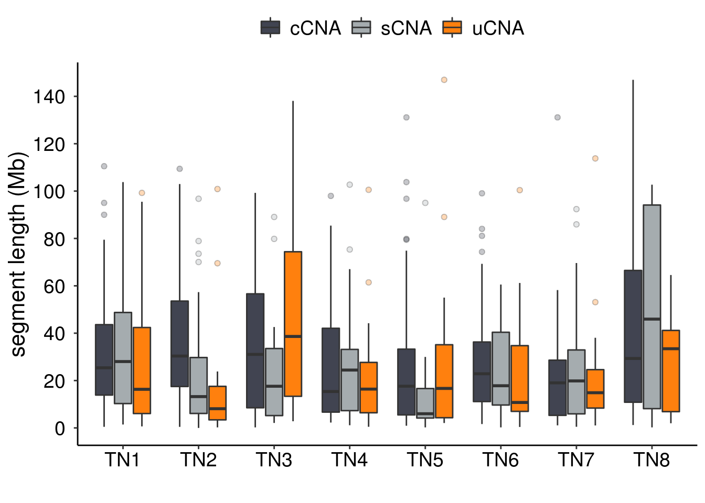